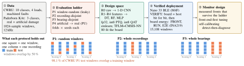
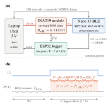
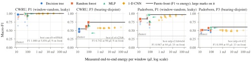
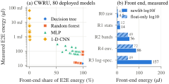
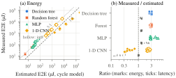
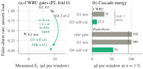

Measured on an Arduino Nano 33 BLE (nRF52840, Cortex-M4F, 64 MHz) with an INA219/ESP32 rig: 15,108 energy windows in 62 sessions, 13 rejected and re-measured.

Five stages from data to monitor. The bottom row shows what each rung of the evaluation ladder holds out: random windows (P1), whole recordings (P2) or whole bearings (P3).
The Nano is powered through a cut USB cable whose VBUS line runs through an INA219 module (R100 shunt, calibrated to an effective 0.1139 Ω). An ESP32 logger samples bus voltage and current at about 1 kHz and integrates power over windows that the Nano frames with its D2 pin, so both clocks time the same interval.
Each block is a 10 s IDLE window followed by N calls of one mode (FRONT, RUN or E2E) lasting at least 10 s. Energy per call is E = (P̄ − P̄idle)·t/N. A window is rejected if the two clocks disagree by more than 0.1 %, the INA219 overflows or the record is incomplete.


cnn-r0-w050d4-fp32 (F1 1.000, 5,856 µJ), but
rf-r2-t5d10-fp32 is within 0.01 F1 for 103× less energy.rf-r4-t25d6-fp32 (F1 0.742, 90.1 µJ);
best CNN 0.594, best MLP 0.653.mlp-r4-h32-fp32 (F1 0.599, 93.3 µJ).
| Family (CWRU) | n | E2E µJ | Front-end share | Latency ms | Flash KB | F1 CWRU P1 / P3 | F1 PU P1 / P3 |
|---|---|---|---|---|---|---|---|
| Decision tree | 12 | 13.7–88.8 | 99.8 % | 0.64–3.9 | 0.24–2.1 | 0.989 / 0.719 | 0.921 / 0.519 |
| Random forest | 18 | 14.3–90.4 | 98.3 % | 0.65–4.0 | 2.4–48 | 0.997 / 0.742 | 0.939 / 0.573 |
| MLP | 26 | 59.4–307 | 82.3 % | 2.7–14 | 3.2–135 | 1.000 / 0.653 | 0.967 / 0.599 |
| 1-D CNN | 24 | 607–64,757 | 0.2 % | 28–2,619 | 4.0–324 | 1.000 / 0.594 | 0.965 / 0.520 |
| Front end | logs | ms | CWRU µJ | float-log µJ | PU µJ | float-log µJ |
|---|---|---|---|---|---|---|
| R0 raw window (CNN input) | 0 | 0.17 | 4.81 | 4.15 | 5.27 | 4.14 |
| R1 ten statistics | 0 | 0.64 | 13.6 | 12.0 | 13.5 | 13.7 |
| R2 statistics + 14 log bands | 14 | 2.50 | 55.9 | 49.5 | 55.3 | 50.0 |
| R4 envelope spectrum | 32 | 3.90 | 86.4 | 71.7 | 85.2 | 71.6 |
| R3 256-bin log spectrum | 256 | 7.26 | 157 | 49.2 | 157 | 50.5 |
The float-log build replaces newlib's double-precision log10f (1,343 cycles)
with a float-only version (100 cycles). R0 and R1 take no logarithm, so their change
(up to 14 %) is the effect of rebuilding the firmware image alone. Float-log campaign:
1 (CWRU) and 2 (Paderborn) repeats so far.

The pre-hardware estimate (instruction-accurate emulator, Cortex-M4 cycle model, datasheet power) orders the models well (Spearman ρ 0.997) but misses their energy by 0.31–5.35× (median 2.83×). Trees and forests sit at 2.53–3.15×; fp32 CNNs below one. With estimated energy, 3 models change Pareto status on the CWRU P3 front and 9 on the Paderborn P3 front. The largest CNN was predicted at 20.9 s per inference; it takes 2.62 s.
Before any energy window, 100 test vectors per model are run on the board and compared with the host: fp32 within 10−4, int8 within one quantization step with identical classes.
| Library | CWRU pass | int8 fail | Paderborn pass | int8 fail |
|---|---|---|---|---|
| Arduino TFLM (Chirale 2.0.0) | 51/80 | 29/29 | 52/80 | 28/29 |
| Patched (per-channel FC, reference MEAN) | 50/50 TFLM | 0 | 50/50 TFLM | 0 |
The unpatched port applies one requantization multiplier to fully-connected layers that TF 2.18 quantizes per channel; class agreement fell as low as 63 %. Energy did not reveal it: patched and unpatched int8 energies differ by 0.972–1.014×.

An integer gate scores every window; an alarm wakes the diagnosis model. The gate re-fits its healthy-state model on the device from the first windows after installation (no fault data). All 1,046 (CWRU) and 1,342 (Paderborn) board alarms matched the host. At an unseen load the factory gate alarms on every healthy window; after 1.4 s of calibration the false-alarm rate is 0.023 at recall 0.999, and the monitor spends 12.3 µJ per window instead of 58.0 µJ. On Paderborn the pre-registered gate rule failed (every passing gate had FPR 1.0); the self-calibrating band-feature gate G6, chosen after the study, gives 54.2 µJ per window against 93 µJ.
| Dataset | Gate | Measured E1 µJ | Repeat CV | Estimate µJ | Measured / estimate |
|---|---|---|---|---|---|
| CWRU | G1 sup | 7.71 | 0.32 % | 3.53 | 2.18× |
| CWRU | G2 healthy | 9.78 | 0.37 % | 3.74 | 2.62× |
| CWRU | G3 either | 9.84 | 0.43 % | 3.78 | 2.60× |
| CWRU | G4 either2 | 9.85 | 0.35 % | 3.78 | 2.60× |
| CWRU | G5 selfcal | 9.71 | 0.37 % | 3.74 | 2.60× |
| Paderborn | G1 sup | 8.08 | 0.62 % | 3.53 | 2.29× |
| Paderborn | G2 healthy | 10.36 | 0.12 % | 3.74 | 2.77× |
| Paderborn | G3 either | 10.33 | 0.25 % | 3.78 | 2.73× |
| Paderborn | G4 either2 | 10.34 | 0.03 % | 3.78 | 2.73× |
| Paderborn | G5 selfcal | 10.37 | 0.22 % | 3.74 | 2.78× |
| Paderborn | G6 selfcal_r2 | 53.25 | 0.11 % | 19.47 | 2.74× |
Pre-registered tests that failed are reported as such: additivity against the main campaign (6 of 8 CWRU and 5 of 8 Paderborn models outside 2 %) and stream-energy prediction within 3 % (4/15 and 15/15 streams). Within one firmware image additivity holds to 0.5 %–0.7 %.
results/cwru/hardware/hw_measurements.csv,
results/pu/hardware/hw_measurements.csvresults/<dataset>/hardware/board_verify*.csv; cascade analysis:
results/<dataset>/cascade_hw/analysis/paper/latex/numbers.tex, generated by
paper/latex/scripts/make_numbers.py